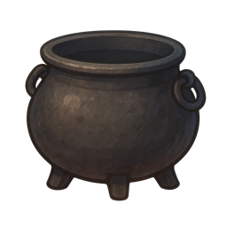

Brew potions from magical herbs and trace runes to cast the right element. Every recipe is a sequence of steps: drop in the right herbs, then draw the spell that finishes the brew. One wrong herb or a sloppy rune and the potion is ruined.
Race the clock, survive as long as you can, or follow the story campaign of a young alchemist.
Features
- Time mode: brew as many potions as you can before the time runs out.
- Life mode: keep going until your mistakes cost you every life.
- Story campaign with its own levels, dialogues and recipes to unlock.
- Herbal codex with every recipe and herb you have discovered.
- Online leaderboards for Time and Life mode, and achievements to collect.
- Shop with cosmetic items bought with gems earned in the game.